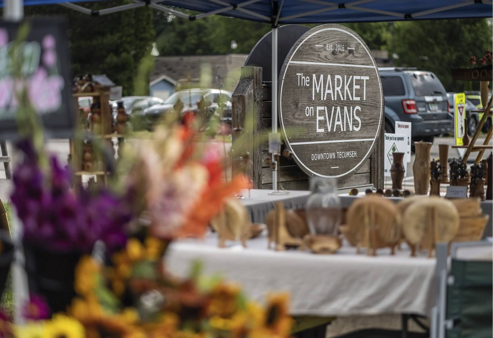
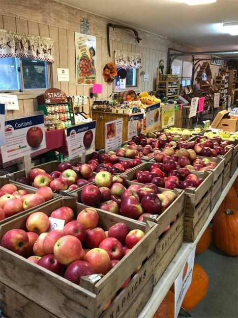

Tecumseh's Farmers Market
Saturday mornings at The Market on Evans
Shop local, support your community, and find fresh foods and handmade goods you simply can't find anywhere else.
When & where
- Saturdays, 9:00 am to 1:00 pm
- 2026 season: May 16 through October 24
- The Market on Evans, 213 North Evans Street, a block and a half north of Chicago Blvd.
- Barrier free parking right across the street, on the corner of Logan Street and Evans Street

For vendors
Sell at the market
Our vendors offer locally grown herbs, flowers, organic produce, eggs, handmade crafts, antiques and much more. The 2026 vendor application is available now.
In the full build this becomes an online form that routes to market staff, with the PDF kept as a fallback.
Good to know
Market questions
What can I buy at the market?
Local produce, farm fresh eggs, handmade craft items and delicious cakes and pies are just a few of the items for sale, along with locally grown herbs, flowers and antiques.
Where do I park?
Barrier free parking is right across the street, on the corner of Logan Street and Evans Street.
Is the market open in winter?
The market runs from May until October on Saturday mornings. The 2026 season ends October 24. Watch the events calendar for the Holiday Night Market on December 4.
Can I rent The Market on Evans?
Yes. When it isn't hosting the Farmers Market, the space is available to rent for a celebration, social gathering or other special activity. It has a grassy field, a paved gathering area and a covered overhang. Download the rental agreement (PDF).